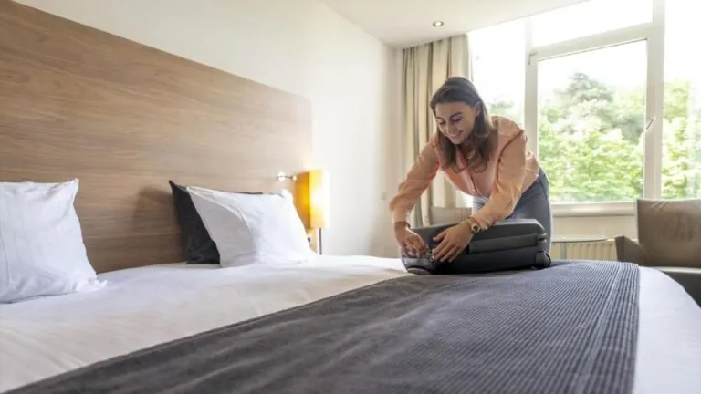
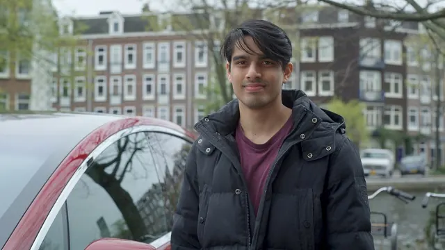
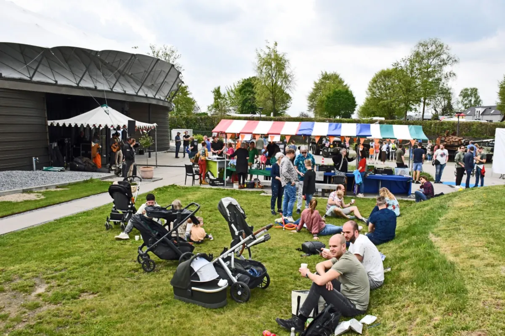

Een weekend Nijmegen
In een weekend zie je niet alleen de stad, maar ook het groene land eromheen. Op zaterdag de binnenstad en de Waal, op zondag de polder of de heuvels.
Overnachten
Slaap in het centrum als je 's avonds wilt uitgaan, of net buiten de stad als je van rust houdt.

Weekendje Nijmegen? Hier Kun je Leuk Overnachten
Een weekendje weg in Nijmegen? Dit zijn de leukste hotels, B&B's en bijzondere overnachtingen in en rond de oudste stad van Nederland.
Lees meer
Wat Zijn de Mooiste Hotels in Nijmegen? Onze Top 5
Overnachten in Nijmegen? Dit zijn de 5 mooiste hotels van de stad, van luxe verblijf tot hotel midden in het gezellige centrum.
Lees meer
B&B in Nijmegen
Overnachten in een bed and breakfast in Nijmegen of omgeving? De leukste B&B's in Nijmegen-Oost, Groesbeek en Wijchen op een rij.
Lees meerZaterdag: de stad
Volg het programma van 24 uur in Nijmegen: 's ochtends het Valkhof en de Stevenskerk, 's middags de winkels en de Waalkade, 's avonds eten en een café. Op zaterdag is er markt op de Grote Markt.

24 uur in Nijmegen
Het dagprogramma voor de binnenstad, van het Valkhof tot de Waalkade.
Lees meerMarkten in en om Nijmegen
Wist je dat er bijna elke dag wel een markt is in Nijmegen of omgeving? Op deze pagina staan alle markten op een rij
Lees meer
Ontdek Nijmegen door de ogen van een local
De favoriete plekken van een Nijmegenaar: verborgen pareltjes, gezellige straatjes en tips die je niet in de reisgids vindt.
Lees meerZondag: polder of heuvels
Kies op zondag tussen twee landschappen. Ten oosten van de stad ligt de Ooijpolder, met dijken, plassen en wilde paarden; je fietst er vanaf de Waalkade zo naartoe. Ten zuiden liggen de bossen en heuvels van Heumensoord en Groesbeek.
Combineer de heuvels met het Vrijheidsmuseum in Groesbeek, over de Tweede Wereldoorlog en de bevrijding van deze streek.

Ooijpolder bij Nijmegen
Alles over de Ooijpolder bij Nijmegen: wandel- en fietsroutes, de Bisonbaai, de Duivelsberg, dieren, eten en drinken en waar je parkeert.
Lees meer
Heumensoord
Wandelen in Heumensoord bij Nijmegen: de routes van 2, 5 en 6 km, parkeren aan de Beukenlaan, de heide met schapen, de beukenlanen en het…
Lees meer
Het Vrijheidsmuseum in Groesbeek
Bezoek het Vrijheidsmuseum in Groesbeek bij Nijmegen: openingstijden, entreeprijzen, wat je ziet, de bus vanaf station Nijmegen en gratis parkeren.
Lees meerWandelen in Nijmegen
Wandelen in Nijmegen: stadswandelingen, het rondje over de Waal naar Veur-Lent, Heumensoord, de Mookerheide, de Ooijpolder en de Walk of Wisdom.…
Lees meer